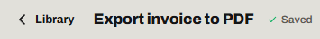
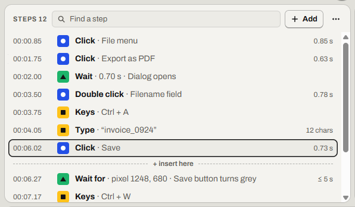
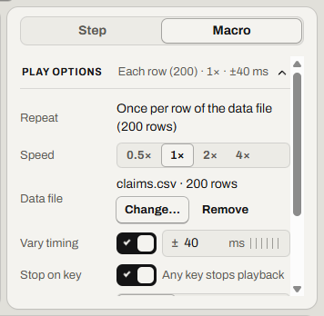
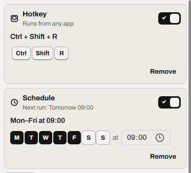
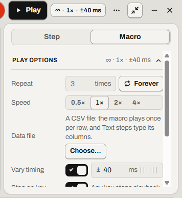
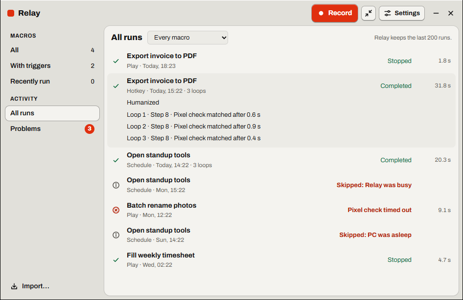

Everything Relay does, in nine stops.
From the first recording to a macro that runs by itself every morning.
Press a key and work as usual.
Every click, drag, scroll and keystroke is kept with its timing. The player stays out of the way while you work.
- Across all your monitors, at any display scaling
- Clicks can follow their window when it moves
- Esc stops; Relay's own windows are never recorded


Steps you can read, and change.
A recording becomes Click · Save, Keys · Ctrl + S, Type · “invoice_0924”. Mouse moves fold into the click they lead to.
- Select several steps and change them at once
- Trim the pauses, smooth or straighten a mouse path
- Find a step by its text; undo anything

Wait for the screen, not the clock.
A slow app no longer breaks the macro. It waits until a pixel turns the right color, or until a button appears.
- Wait for pixel: pick it with a loupe, set how long to wait
- Find image: snip a button, Relay finds it anywhere, from half to twice its size, and clicks it
- A timeout says which step and why

Text that changes every run.
Type Invoice {date} #{n} and Relay fills it in as it plays. Give it a spreadsheet, and it plays once per row.
{date}{time}{clipboard}{n}, and{col:Name}from a CSV file- Types the same on any keyboard layout


Six ways to start without you.
A macro can run when you press its key, or when something happens on your PC.
- Hotkey, from any app
- Schedule: Mon–Fri at 09:00; Every… 5 seconds to 24 hours
- App starts, a pixel changes, an image appears

Play it your way.
Accurate to about a millisecond, or a little human on purpose.
- 0.5× to 4×, once, N times or forever
- Vary timing by a few milliseconds so it doesn't look robotic
- Pause, resume and stop from the player

See where it clicks before it does.
A red ring ripples where each click lands, drags draw their path, keys show by the cursor. Or see every target at once, numbered in order.
- Marks let clicks through and never show in screenshots
- On the player, one key
Know what ran while you were away.
Every run is kept, triggered or not: when, how long, and what stopped it. Problems are counted, and a timeout opens at its step.

Take it anywhere.
Macros are small .rly files: back them up, send them, keep them in Git.
- Standalone program: an
.exethat plays it on any PC, without Relay - AutoHotkey v2 script, one block per step
- JSON, for your own tools